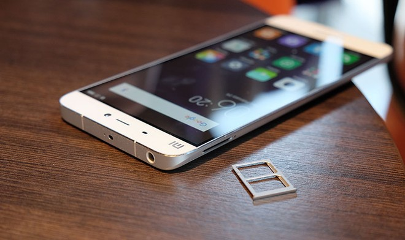

Durante la presentación del terminal, Xiaomi explicó que la razón por la que hemos tenido que esperar casi dos años en ver el sucesor del Xiaomi Mi4 es precisamente el diseño. Según Hugo Barra, ha sido un gran esfuerzo introducir una lente de cámara en la posición del iPhone 6 (parte trasera superior) para que no sobresaliera, y un botón de inicio con escáner de huellas como el del Samsung Galaxy S6 (alargado y en la parte frontal) para reducir la proporción cuerpo-pantalla. El resultado, lamentablemente, es un teléfono con un aspecto a medio camino entre los teléfonos estrella de Samsung y Apple.
El único problema es que, a pesar que fuera presentado en un evento para la prensa internacional en Barcelona durante el MWC, los únicos países en los que ha aparecido el teléfono son China e India. Las posibilidades de que aparezca oficialmente en Europa son prácticamente nulas de acuerdo a declaraciones que Barra ha dado en el pasado, por lo que tu única opción es acudir a importadores, que incrementarán el precio final.